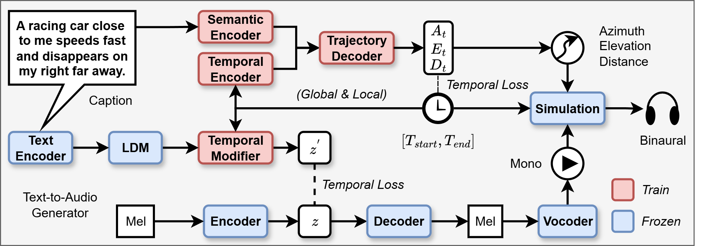

Text2Move: Text-to-moving sound generation via trajectory prediction and temporal alignment
Yunyi Liu1,2*,
Shaofan Yang, 2
Kai Li1,2*,
Xu Li2
1University of Sydney
2Dolby Laboratories, Inc
*Work was done while interning at and funded by Dolby

Human auditory perception is shaped by moving sound sources in 3D space, yet prior work in generative sound modelling has largely been restricted to mono signals
or static spatial audio. In this work, we introduce a framework for generating moving sounds given text prompts in a controllable fashion. To enable training,
we construct a synthetic dataset that records moving sounds in binaural format, their spatial trajectories, and text captions about the sound event and spatial motion.
Using this dataset, we train a text-to-trajectory prediction model that outputs the three-dimensional trajectory of a moving sound source given text prompts.
To generate spatial audio, we first fine-tune a pre-trained text-to-audio generative model to output temporally aligned mono sound with the trajectory.
The spatial audio is then simulated using the predicted temporally-aligned trajectory. Experimental evaluation demonstrates reasonable spatial understanding of the text-to-trajectory model.
This approach could be easily integrated into existing text-to-audio generative workflow and extended to moving sound generation in other spatial audio formats.
Below we show our synthesis results. We use some reference SFX tracks as guiding sounds and extract their acoustic features including fundamental frequency,
amplitude, transient components, and mel-spectrograms. We fed these features into our model to perform timbre transfer. Ideally the generated sound should be
identical or close to the reference soundtrack.
Above we could see that for impulsive sounds (footsteps and gunshots), DDSP tends to rely heavily on its harmonic synthesizer, with very audible
harmonic artifacts. This is because we set the number of harmonics for the harmonic synthesizer as 100, for unity purposes.
The decoder by itself doesn't learn to attenuate the harmonic synthesizer very well with this structure. Our approach could synthesize inharmonic
sounds easily with an indicative harmonic attentuator. Further, our approach seems to synthesize impulsive sounds with sharper attacks. This could
be seen in gunshot sounds which contain many fast repetitive impulses.
 In the preprocessing stage, we extract a guiding amplitude vector from the target sound effects following the steps as shown above: computing STFT, performing a
harmonic-percussive source separation of the signal, computing the spectral peak of the percussive signal, and then getting the amplitude vector of the place
where it detects a spectral peak. The decoder uses this information to output the required amplitude and frequency for the sinusoidal modelling in the DCT domain.
Once the sinusoids are synthesized, we convert them to time domain using IDCT, which would result in various kinds of transient signals in different time frames.
In the preprocessing stage, we extract a guiding amplitude vector from the target sound effects following the steps as shown above: computing STFT, performing a
harmonic-percussive source separation of the signal, computing the spectral peak of the percussive signal, and then getting the amplitude vector of the place
where it detects a spectral peak. The decoder uses this information to output the required amplitude and frequency for the sinusoidal modelling in the DCT domain.
Once the sinusoids are synthesized, we convert them to time domain using IDCT, which would result in various kinds of transient signals in different time frames.